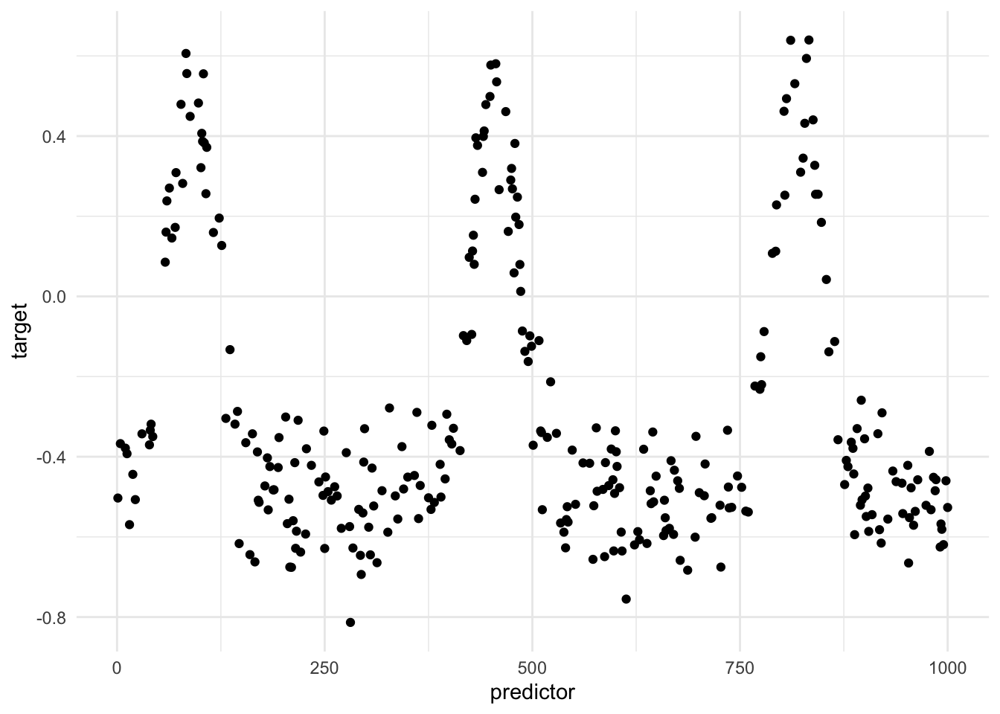
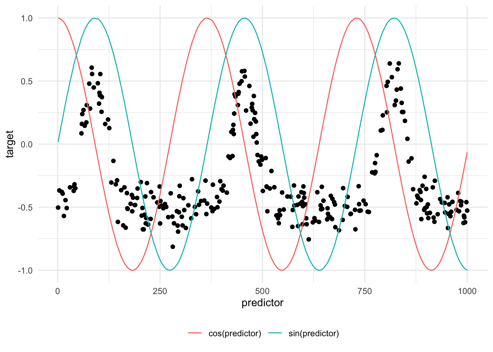
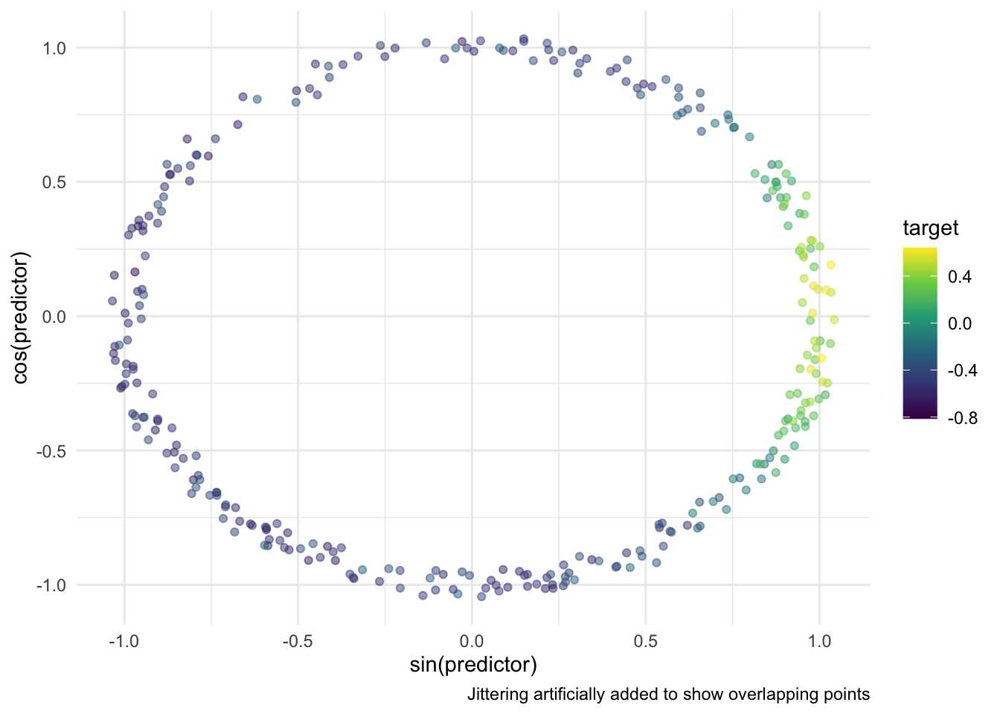
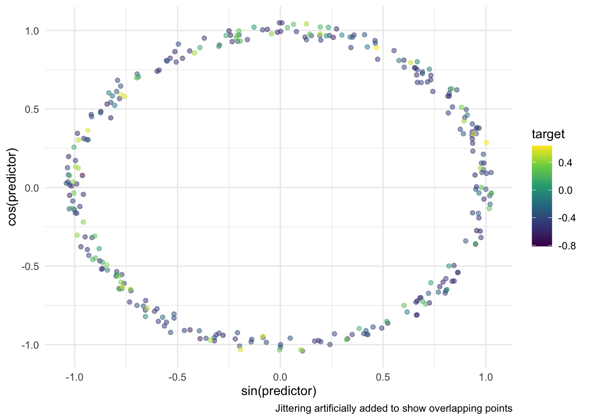
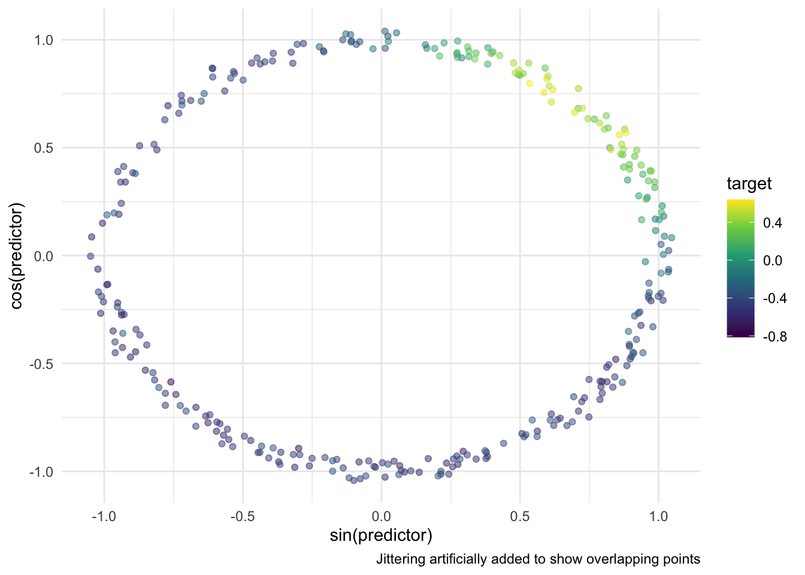
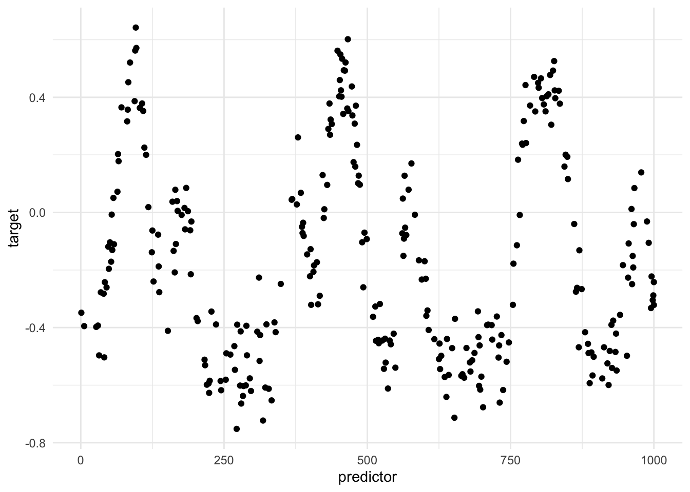
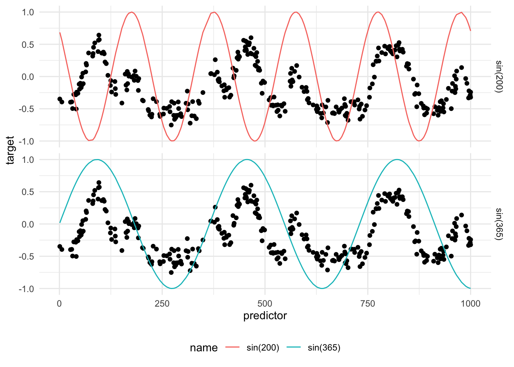

63 Trigonometric
63.1 Trigonometric
One of the most common ways of dealing with periodic or cyclical data is by applying the trigonometric functions sin() and cos() to these variables. This is not a trained method.
You will note that many occurrences of periodic data are datetime variables in nature. Please read the Datetime Circular chapter, for the additional considerations to take into account when working with datetime variables specifically.
The terminology we will be using in this chapter when talking about sine curves is period and offset. A sine curve normally has a period of \(2\pi\). A period of \(2\pi\) is unlikely to be useful, we can set this value to be an arbitrarily different value by dividing by both that value and by \(2\pi\).
\[ \sin\left(\dfrac{x}{\text{period} \cdot 2 \pi}\right) \]
This sine curve has a period of period. The second thing we might wanna do is to slide this curve one way or another. The offset handles that by sliding the sine curve that many units back or forwards.
\[ \sin\left(\dfrac{x - \text{offset}}{\text{period} \cdot 2 \pi}\right) \]
I think that this is easier to see with some toy visualizations. The following toy data set contains a highly significant periodic effect.
If we were to take the sin() and cos() of the predictor, using appropriate period and offset we can overlay them on the previous chart

We notice that the sin() transformation somehow captures the periodic nature of the data. It obviously can’t fully capture the effect since the relationship isn’t a perfect sine curve.
The effect might be more noticeable if we change the way we visualize this effect.

In this simple case, the predictor_sin_1 becomes an ideal predictor. On the other hand, predictor_cos_1 doesn’t do as well since it doesn’t allow for a clean separation between high and low target values. All the high values appear when predictor_cos_1 is close to 0. However, not all observations where predictor_cos_1 is close to 0 have high target values.
Above we got lucky that we picked the period and offset. if you are offeven by a bit you can get uninformative transformations like the one below.

The offset is also important. We got lucky that it gave 1 good predictor and one bad predictor. Even if the period is good, but the offset is off you end up with two decent predictors. These two predictors are still good enough, but they are less ideal than the first example we got.

One of the issues with this approach is that each variable contains double information. E.i. you need both variables to detect “summer”.
One of the downsides to taking both the sin() and cos() of a predictor, is that it is unlikely that both of them capture the effect well. You might get one good and one bad, or both decent. The good thing about calling both sin() and cos() is that you don’t have to worry about the offset too much. As long as you get the period right you get a signal in at least one of the curves.
If you spend some manual time finding the right period and offset, then you only need to calculate sin(). For a sufficiently periodic effect and proper placement, a single sin() is going to be more effective than both sin() and cos(). This is especially true since cos() is a shift of sin() by definition.
Propose now we have multiple periodic signals. They could be shifted versions of each other, think Halloween, Christmas, and Valentine’s day. Or they could have different periods. This would be hard to handle using a single set of curves, and we thus have to create one for each periodic pattern. This is also where the decision to only do sin() instead of both helps, as we are trying to limit redundant or ineffective predictors from being created.


These two newly created predictors now hit the peaks of each of the periods.
A glaring issue right now is that all signals are not perfect sine curves. This method explained in this chapter will thus work less well for sharp spikes and asymmetric signals. The more advanced methods such as periodic splines and periodic indicators handle these types of data better.
63.2 Pros and Cons
63.2.1 Pros
- Easy and fast to calculate
- Calculating both
sin()andcos()is fail-safe if you have the right period
63.2.2 Cons
- Doesn’t fit all periodic data shapes
- Sensitive to should of period
63.3 R Examples
We will be using the animalshelter data set for this.
library(recipes)
library(animalshelter)
longbeach |>
select(outcome_type, intake_date)# A tibble: 29,787 × 2
outcome_type intake_date
<chr> <date>
1 euthanasia 2023-02-20
2 rescue 2023-10-03
3 euthanasia 2020-01-01
4 transfer 2020-02-02
5 rescue 2018-12-18
6 adoption 2024-10-18
7 euthanasia 2020-07-25
8 rescue 2019-06-12
9 rescue 2017-09-21
10 rescue 2024-12-15
# ℹ 29,777 more rowsThe step_harmonic() will calculate the
trig_rec <- recipe(outcome_type ~ intake_date, data = longbeach) |>
step_harmonic(intake_date,
cycle_size = 365,
frequency = 1,
starting_val = 0,
keep_original_cols = TRUE)
trig_rec |>
prep() |>
bake(new_data = NULL)# A tibble: 29,787 × 4
intake_date outcome_type intake_date_sin_1 intake_date_cos_1
<date> <fct> <dbl> <dbl>
1 2023-02-20 euthanasia 0.884 0.467
2 2023-10-03 rescue -0.970 0.243
3 2020-01-01 euthanasia 0.205 0.979
4 2020-02-02 transfer 0.687 0.727
5 2018-12-18 rescue -0.0344 0.999
6 2024-10-18 adoption -0.867 0.498
7 2020-07-25 euthanasia -0.574 -0.819
8 2019-06-12 rescue 0.146 -0.989
9 2017-09-21 rescue -1.000 0.0215
10 2024-12-15 rescue -0.0516 0.999
# ℹ 29,777 more rows63.4 Python Examples
We are using the shelter_cats data set for examples. Since there isn’t a built-in transformer for this transformation, we can create our own using FunctionTransformer() and numpy.sin() and numpy.cos().
from feazdata import shelter_cats
from sklearn.compose import ColumnTransformer
from sklearn.preprocessing import FunctionTransformer
import numpy as np
import pandas as pd
# transforming `intake_date` to integer.
# Should properly be done in sin_transformer() and cos_transformer()
shelter_cats["intake_date"] = pd.to_datetime(shelter_cats["intake_date"])
shelter_cats["intake_date"] = shelter_cats["intake_date"].astype(int)
def sin_transformer(period, offset):
return FunctionTransformer(lambda x: np.sin((x - offset) / period * 2 * np.pi))
def cos_transformer(period, offset):
return FunctionTransformer(lambda x: np.cos((x - offset) / period * 2 * np.pi))
ct = ColumnTransformer(
transformers=[
("intake_sin", sin_transformer(365, 0), ["intake_date"]),
("intake_cos", cos_transformer(365, 0), ["intake_date"]),
],
remainder="passthrough"
)
ct.fit(shelter_cats)ColumnTransformer(remainder='passthrough',
transformers=[('intake_sin',
FunctionTransformer(func=<function sin_transformer.<locals>.<lambda> at 0x15ad15a80>),
['intake_date']),
('intake_cos',
FunctionTransformer(func=<function cos_transformer.<locals>.<lambda> at 0x15ad16d40>),
['intake_date'])])In a Jupyter environment, please rerun this cell to show the HTML representation or trust the notebook. On GitHub, the HTML representation is unable to render, please try loading this page with nbviewer.org.
ColumnTransformer(remainder='passthrough',
transformers=[('intake_sin',
FunctionTransformer(func=<function sin_transformer.<locals>.<lambda> at 0x15ad15a80>),
['intake_date']),
('intake_cos',
FunctionTransformer(func=<function cos_transformer.<locals>.<lambda> at 0x15ad16d40>),
['intake_date'])])['intake_date']
FunctionTransformer(func=<function sin_transformer.<locals>.<lambda> at 0x15ad15a80>)
['intake_date']
FunctionTransformer(func=<function cos_transformer.<locals>.<lambda> at 0x15ad16d40>)
['animal_id', 'animal_name', 'animal_type', 'primary_color', 'secondary_color', 'sex', 'dob', 'intake_condition', 'intake_type', 'intake_subtype', 'reason_for_intake', 'outcome_date', 'crossing', 'jurisdiction', 'outcome_type', 'outcome_subtype', 'latitude', 'longitude', 'intake_is_dead', 'outcome_is_dead', 'was_outcome_alive', 'geopoint']
passthrough
ct.transform(shelter_cats).filter(regex=("^intake_(sin|cos).*")) intake_cos__intake_date intake_cos__intake_date
0 0.515 0.857
1 -0.713 -0.701
2 0.722 0.692
3 0.944 0.331
4 -0.918 0.397
... ... ...
13809 -0.543 -0.840
13810 -0.905 -0.424
13811 -0.068 -0.998
13812 -0.068 -0.998
13813 -0.630 -0.777
[13814 rows x 2 columns]